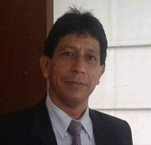

Historia, legado
y comunidad
Conoce quiénes somos, de dónde venimos y el legado del gran educador que da nombre a nuestra institución: Don Enrique Nerini Collazos.
Don Enrique Nerini Collazos
Un educador cuya vida fue un acto de entrega total a la formación de las nuevas generaciones peruanas.

Enrique Nerini Collazos
Doctor en Letras · Educador · Gran Oficial de la Orden del Sol del Perú
Nacimiento: 24 de mayo de 1897, Lima, Perú
Formación: Dr. en Letras — UNMSM
Fundó: C.N. Nuestra Señora de Guadalupe (1943)
Distinción: Orden del Sol — Gran Oficial
Fallecimiento: 14 de julio de 1976, Lima, Perú
Un maestro para la historia
Enrique Nerini Collazos (1897–1976) fue uno de los educadores más destacados del Perú del siglo XX. Nacido en Lima en el mes de mayo, dedicó toda su vida a la formación de jóvenes y al fortalecimiento de la educación peruana, dejando una huella imborrable en generaciones de estudiantes.
Se graduó como Doctor en Letras de la Universidad Nacional Mayor de San Marcos, la más antigua universidad del continente americano, y desde temprana edad se dedicó a la docencia con una vocación que trascendió las aulas.
Su visión educativa era integral: creía firmemente que la formación debía abarcar el desarrollo intelectual, moral y físico del estudiante, y que la escuela era el espacio donde se forjaba el carácter de los futuros ciudadanos.
Nace en Lima
El 24 de mayo nace Enrique Nerini Collazos en la capital peruana.
Estudios en San Marcos
Se gradúa como Doctor en Letras en la UNMSM, formándose en la más alta tradición académica peruana.
Funda el Colegio Guadalupe
Fundó el Colegio Nacional "Nuestra Señora de Guadalupe", que se convertiría en una de las instituciones educativas más emblemáticas del país.
Orden del Sol del Perú
Recibe la condecoración en el grado de Gran Oficial, el más alto reconocimiento del Estado peruano a su labor educativa.
Fallecimiento
El 14 de julio fallece en Lima, dejando un legado imborrable en la educación peruana que continúa inspirando hasta hoy.
Lo que construyó para el Perú
Tres pilares que definen la trascendencia de su vida y obra en la educación peruana.
Fundador del Colegio Guadalupe
En 1943, fundó el Colegio Nacional "Nuestra Señora de Guadalupe" en Lima, que se convertiría en una de las instituciones educativas más emblemáticas e influyentes del país.
Educación Integral
Fue promotor de una educación que abarcaba el desarrollo intelectual, moral y físico del estudiante, reconociendo que la formación verdadera va mucho más allá de los conocimientos.
Innovación Pedagógica
Impulsó la innovación pedagógica y la formación docente en un momento crucial para la educación peruana, sentando bases que siguen siendo relevantes hoy.
Su presencia en nuestro distrito
Chorrillos rinde homenaje permanente a Don Enrique Nerini Collazos a través de un busto y plazuela ubicados detrás del emblemático Monumento a Olaya, en el corazón del distrito. Este espacio es un punto de encuentro de la memoria histórica chorrillana.
Nuestra institución, la IE N° 7034, lleva su nombre con orgullo. Es uno de los colegios más antiguos de Chorrillos, parte del tejido social y cultural del distrito, donde generaciones de familias han confiado la formación de sus hijos.
Cada alumno que cruza las puertas de nuestra institución continúa vivo el legado de un hombre que creyó, por encima de todo, en el poder transformador de la educación con valores.
🏛️ Su huella en Chorrillos
Busto y plazuela dedicada detrás del Monumento a Olaya
La IE N° 7034 lleva su nombre con honor
Uno de los colegios más antiguos del distrito de Chorrillos
Referente de identidad cultural chorrillana
Generaciones de familias del Barrio Chorrillos formadas en sus aulas
Misión, Visión y Valores
Misión
Brindar una educación integral y de calidad en los niveles Inicial, Primaria y Secundaria, formando estudiantes con sólidos valores, pensamiento crítico y herramientas para su desarrollo personal y profesional.
Visión
Ser referente educativo de Chorrillos y Lima Sur, reconocida por la excelencia académica, la inclusión y la formación de ciudadanos comprometidos con su comunidad y con el Perú.
Valores
Respeto · Responsabilidad · Honestidad · Solidaridad · Identidad nacional y chorrillana · Compromiso con la excelencia
Quienes nos lideran
Nuestro equipo directivo conduce la institución con vocación de servicio y compromiso educativo.

Orellana Zapata
De la Torre Mercado
Gallo Yupayccama
Benites Vigil
Nuestros docentes
Profesionales comprometidos con la formación integral de nuestros estudiantes en cada nivel.
Abanto Quispe
IvyChancahuaña Cueva
Ana EstefaBenvenutto Magallanes
Sara JacobaTamayo Ñuñuri
Lourdes NoemíFelix Garcia
Milagros NatividadGalarreta Villón
Mónica AngélicaChávez Flores
AlcidaRivera Rodríguez
Ethel AugustaHerrera Ortiz
CynthiaBarrios Vílchez
Rebeca AnaTapia Reyes
Giovanna SilviaChecca Rezza
Raquel NathalyHidalgo Mirabal
Beatriz BibianaRojas Cahuata
PatriciaMore Velásquez
Carlos AlfredoEspinoza Alvarado
HildaFuentes Rueda
Patricia NievesFuentes Casquino
Ruti FridaPérez Baldeón
Doris PatriciaCoronel Flores
AmaliaBoy Hernández
Jenny MaribelCastillo Rojas
Carmen ModestaTrujillo Sánchez
Humberto HugoRetuerto Fernández
Regina GabrielaMendoza Hernández
Félix RicardoRodríguez Taminez
Emma ElisaEspino Vivanco
FelicitasCangalaya Guerra
CeliaCarrasco Ortiz
María AmeliaVega Porras
Alberto AníbalHuaringa Medrano
Eliana MiriamRosas Ordóñez
Colette NoeliaDe la Cruz Calderón
Ana BerthaTuesta Gallegos
IsraelGuzmán Cartagena
Jessica AndreaAyuni Prado
Ronald AlbertoFernández Rejas
Fernando RománGuzmán León
FortunatoBarrios Sarachaga
Sandro FavioQuispe Achata
Rufina TeofilaCasusol Lozano
Edith TeresaLópez Nizama
Carmen RosaHerencia Olivas
Patricia GiovannaRosas Alarcón
Antonia LuisaRipa Hurtado
Teófilo